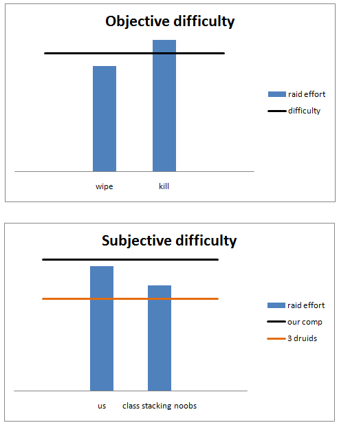
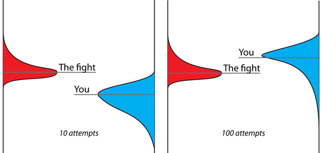

What is difficulty?
[This is not the 10/25 comparison].
I've been considering writing about this for a while now, and now seemed like the perfect time. I'm sure I don't need to tell why.
I've never really understood some of the arguments people were (and still are) making in the 10 vs 25 debate (and elsewhere!). I'm probably not very wrong if I say the feeling is mutual with those who write them.
In particular, many think that 10-man kills done by 25-man guilds aren't legit, and it's always the two same points: raid comp and gear. I have a hard time understanding why we take for granted that you need a *good* setup instead of a 'balanced' one, and why some people are having a really hard time understanding that -- particularly some 10-man advocates, but certainly not limited to that bunch. After all, you can get both the comp and the gear by simply running two or more raids. Tedious, I know, but necessary.
Why is this clear as day to me, but simply goes ignored by some when you make the argument?
(Note that I'm not claiming if the kills are 'legit' or not, or whether they should be counted or not. It's just the train of thought.)
I thought about it a bit, and I think the root is in the way we view the fights and the difficulty. I present to you, in all its Excel chart magnificence, objective and subjective views of difficulty:

The horizontal line represents the boss fight, and all the things you cannot influence. Conceptually, if your 'raid effort', for the lack of a better term, goes over that line, you can proceed to divide loot. If you come up short, you've got a few minutes to afk during the corpse run.
In our minds, the line is the difficulty. It represents everything we can't touch. It's absolute. It's the same for everyone. Everything we can do with tactics, raid optimization, and player performance is represented in the raid effort bar. This boss-centric, objective view comes very naturally when you're racing for the world first. The bosses are the same for everyone (or should be anyway, after-kill hotfixes aren't very nice), so it makes sense to conceptualize it like that.
But why should I care if I was just about to get a server 4th kill? If only we had two more druids, the boss would be so easy. You can't really even influence the setup that much, since you're playing with friends. Not everyone has time to level up another character, not to mention raid with it. On paper you might have control of some things, but in practice you might not have influence over them. So again, it makes sense to think of your possible efforts as the bar, and the fight as the line. Those bastards who got the realm first had access three druids, and you neither do or will have, so for all intents and purposes it's the same thing as the fight actually being easier for them.
The fight isn't absolute. This is a subjective point of view, focusing on the raid and its capabilities.
Are *you* raiding the boss, or are you raiding *the boss*?
We're doing the latter, and that's where most of the confusion and 'unfair' cries come from. I imagine it's as hard to understand the objective point of view if you're focused on your raid group as it is for me to understand anyone with a subjective view.
This doesn't presentone very important factor in difficulty that well however -- the learning curve. Here's the best I could come up with in a short time:

The fights aren't static either, you're going to have some RNG no matter what you do. And I'm sure everyone who's ever raided knows that everyone makes mistakes. The 'difficulty' of the fight for any given attempt is going to land somewhere within some distribution, and so is the sum of all your effort and potential for that try. The distribution of probability for what your raid can do will change with more attempts. That's the progress you're seeing. You'll have less random wipes, you'll cope with RNG, and eventually proceed to one-shot the boss nearly all the time during farm.
Which one is harder, the boss that could be killed on try 30 and took 100, or the boss that could be killed on try 90 and took 95? I'd say comparing different bosses is harder than killing them :)
- arx's blog
- Log in to post comments
Comments
Lots of love for objectivity. Well written and certainly visually underlined :) I am looking forward to the big comparison between 10 and 25.
Sat, 23/07/2011 - 17:09
Well in fact I guess subjectvity is something very natural for humans (even gamers)
I guess it's really hard to understand from a point, where you just can be objective. You have enough players and caraters to always fight with the perfect lineup as you surely did on Ragnaros 25H as well.
Imagine a situation, where you could not fight Rag this way and loose the World 1st cause of that.
Would you still feel the same way?
Anyway, nice post! I just wanted to mention that objectivity is very easy to praise if are not handicaped by your raid comp yourself.
Sat, 23/07/2011 - 17:48
@lithien
Yeah, I would. We could have done something, but didn't. Barring exploits and the like, but that's waaaaaay too long of a conversation for comments.
Sat, 23/07/2011 - 19:05
I guess it's just the human ego getting in the way of people's opinions. Some guy says to another that his feat is not as good because he doesn't want to be worse than him. And when the other guy hears this, he doesn't like to be thought of as a "lesser player" so he does what's natural: he does the same right back at him.
This also affects the whole 10 vs 25 debate but that's another topic so I won't go into that here. You're entirely right that the difficulty of a boss is absolute, however certain bosses becomes easier by class stacking. Note however that it doesn't reduce the boss difficulty itself, it's more on the other side that it makes it easier for the raid without having to put as much effort.
But class stacking is part of the game and anyone who really wants to do it can do it. That's why it's silly to belittle a guild's kill "because they had a lot of druids". In the same way, just like you said, not everyone can do this because of various reasons so they don't, but when they notice that someone actually did it, yup you guessed it, human ego strikes again and they're trashing the guild that got the kill first.
Hope to read more of these posts. Keep it up.
Sat, 23/07/2011 - 18:25
Loved the charts that made me chuckle a little :P
Who cares what's more difficult or what's legit and what's not. This is only a game and we are all having fun so lets hold hands, jump, skip and sing while we can because once the game is done we are all nobody's ;) lets have fun while we can :)
Sat, 23/07/2011 - 18:55
Hmm you did those charts in excel eh? I'd like to see that data... lol! Excellent read, I enjoyed it.
Sat, 23/07/2011 - 22:59
I like your conceptualization of boss fights as probability distributions, but I don't think "objective" and "subjective" are a very fortunate choice of words in this context, because they imply that there is one true level of difficulty, when in reality, any statement of difficulty is conditional on a set of assumptions.
Consider the following example (which obviously is utterly unrealistic, yet illustrates the point):
Raid boss Crushyourgpu has just been released. Blizzard's graphic artists went completely overboard and used far too many vertices/particles/animations/etc. in this fight and the boss was released without any testing. As a consequence, even players with high end graphics cards are only getting 4 fps. In principle, the fight is relatively simple, but it requires that players respond immediately to void zones and other encounter mechanics, which, in combination with the low fps, makes the boss insanely difficult. There is, however, a professional grade $20,000 graphics card that can handle the encounter at 15 fps.
Now according to the logic you have outlined above, you would describe the boss difficulty as "objectively easy", because in the theoretically optimal case you have a pool of 10/25 players who are able and willing to spend $20k on a graphics card. Given that insane premise, however, it really doen't make much sense to describe the fight as "objectively easy". Instead, a much more appropriate description would be "if you have an insanely expensive GPU, the fight is easy, otherwise it is terribly hard".
The same principle applies to class stacking, for instance. If there was a boss that was very hard unless you had 23 well geared holy paladins in your raid it just would not make sense to call the boss "objectively easy" without any further qualifications. The only meaningful description would be "if you have 23 well geared holy paladins, the boss is easy, otherwise it is very hard".
In summary, it's just not appropriate to talk about "objective difficulty" in this context, or simply call a boss "easy" without acknowledging that that statement is only true given a certain amount class stacking that the vast majority of guilds don't have the ressources for. One could just as well relabel your "objective difficulty" as "theoretical pie-in-the-sky difficulty" and your "subjective difficulty" as "real world difficulty for regular raids without insane ressources". Those terms would be equally loaded and equally misleading and imprecise.
Sun, 24/07/2011 - 02:46
@ Asgor
I beg to differ. I believe his description of boss difficulty is pretty valid.
For 'Objective Difficulty', the difficult of the encounter is a static value that your guild must overcome, represented something like this:
Boss Difficulty vs The Guilds Effort (Time, Skill, Resources, and Tactics)
If Boss Difficulty is greater than the guilds Time, Skill, Resources, and Tactics, its a wipe.
If Boss Difficulty is less than the guilds Time, Skill, Resources, and Tactics, its a kill.
For instance: Raiding hours upon hours, day after day + World Class Skill and execution + Gear, Mains, Alts + Honing of tactics over 500+ wipes tipped the scale in Paragons favor vs H:Ragnaros. Multitudes of other guilds are on H:Ragnaros now, but are lacking in some of these areas in order to reach the point where they pass the difficulty tipping point. Having more time, more skill, extra of class X to bring in, or a better strategy doesn't lower the bosses difficulty, it just brings you a little closer to catching up with the Guild Effort needed and getting a kill, which I think his graphic represented perfectly. Simply because the vast majority of guilds can't or don't want to put in the effort that the top guilds in the World do when shooting for World 1st kills, you can't claim that the boss is in some way harder or easier than it actually is. Once 'average' guild 'Casuals'r'us' has gathered enough gear and worked on their tactic enough to overcome the disparity in their time spent, skill level, and lack of Druids, they too will get a kill, although it will take months longer. Bottom line is, the whole point of the Objective Difficulty theory is that the bosses difficulty doesn't ever change (as he said, baring a nerf), no matter your point of view (World Class, Top 500, or Casual), even if that includes stacking classes, you simply are closer or farther away from getting a kill based on the 'Guild Effort' you bring to the encounter.
Sun, 24/07/2011 - 07:45
-deleted-
Sun, 24/07/2011 - 09:41
@Asgòr
Objective and subjective are the words that I think best describe these properties. I used them because the juxtaposition reminded me of discussions in aesthetics about the nature of beauty. Neither is correct or incorrect -- they're just different points of view, and I'm trying to explain the clearly existing communication gap through these.
Nothing I wrote is meant to be a perfect model that doesn't break under any scrutiny. I think much better (and closer to practice) examples for breaking it are mechanics that depend on your raid composition, such as the class calls on Nefarian or, to a lesser degree, the orbs that Archimonde gains upon a player death. Random drakes on Halfus would be a perfect example if the spawns could be different for different players. Besides, it's not like you can quantify an encounter or your efforts to a single number, the illustrations and models are conceptual.
Sun, 24/07/2011 - 15:20
I agree completely with the sentiment of the article, but I believe where you'll find trouble is the term "difficulty". What you mean by "difficulty" is semantically "the total requirements for the encounter", where as frequently those under the subjective viewpoint are reading "difficulty" as "the required skill and performance of the players participating in the encounter."
As such, there are two essentially equal points of view that are arguing over something rather simple: if things like raid composition, gear, PC performance, etc are part of a raid's effort (with a static difficulty) or are things that reduce the (to use a separate term) challenge of the encounter.
Wed, 27/07/2011 - 10:53
Deleted
Sun, 31/07/2011 - 21:39
I think you missed something at the start where Arx posted "[This is not the 10/25 comparison]."
Arx is not talking about anything that you just speak about. I think you need to read it again, you are embarrass yourself a little in your post.
(forgive my English.. I'm french)
Sat, 30/07/2011 - 19:29
really nice thinking here, I would have had that gaming is all about learning curve, when you talk about learning you need to think about memory too. Difference in rainding day/week does a huge difference since Ebbinghaus we know that a human being (no matter how good or fast learner he is) loose 50% of is memory content in a day (its a log curve) so no if your raid group raid only 2 days a week (and lets say they do so back to back) they will never progress at the same speed no matter their natural talent. Lucky for us we do relearn quicker then we forget, but still you will do useless wipe until you have neural network specialised to do the job witch will take some time. Another issue I would like to see your thinking on is on grinding a strath for yourself vs getting it from you tube, recent study show that even if you learn faster by getting the info from someone else (i.e. explicit learning) you will alway be 200 ms lower then ppl who grinded it (i.e. implicit learning) 200 ms is huge its more then most of the best gaming gear and recent computer can give you in this game, wich would eventualy lead to less avoidable damage taken
Mon, 29/08/2011 - 22:42